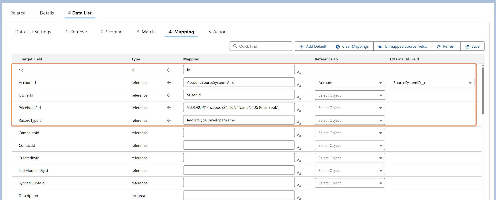

Reference fields can be populated in several ways:
Use the record ID directly if known.
For Record Types, assign either the Developer Name or the ID.
For objects with External IDs, map the External ID field.
Use VLOOKUP to resolve the record ID by
matching one or more fields.
